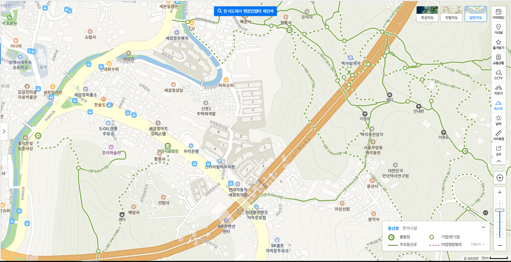
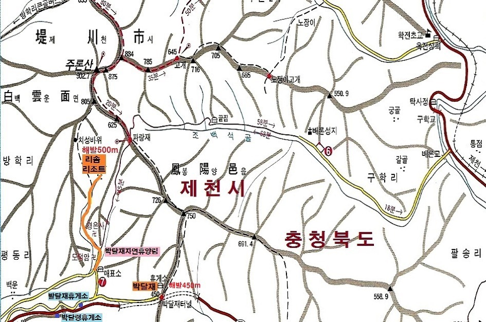

서울 부암동

|
 |
| 2020년 04월 05일 |
서울미술관, 석파정: 코끼리바위/별채/소나무, 세검정, (자하슈퍼)불암바위, 백사 별장터, 백사실계곡, 백석동천, 산모퉁이 카페, 자한손만두, 윤동주 문학관, 무계원, 현진건 집터, 안평대군 이용집터 (몽유도원도), 반계 윤웅렬 별장 |
느낀 점, 배운 것
- 리솜 포레스트 10동 1호는 보일러실이 바로 옆에 있는데, 온돌방에서는 보일러 소리에 잠을 자기 힘들다.
- 이상하게 깊은 잠이 안든다. 에너지가 충만하거나... 다른 이유가 있을 듯.
- 전자렌지로 밥하기는 잘 안된다. 현미, 콩은 잘 안 익는다. 흰쌀밥만 하면 잘 될까? 큰 그릇에 물을 많이 넣으면 될까?
- 우유를 넣은 계란찜 + 전자렌지 밥은 소화가 너무 빨리된다. 다른 간편식 메뉴를 찾아야 할 듯
배론성지
배론이란 지명은 지형이 배의 밑바닥 모양을 닮았다고 해서 붙여진 이름. 한문으로 舟배주論논의할론이라고도 함 (왜 논의할 론자를 쓰는지 이해 안됨).박달재
박달 선비와 금봉의 전설이 있고, 울고 넘는 박달재라는 노래도 있다.옛날 ... 산맥을 넘는 주요 고개 중의 하나이다.
의림지 (가보지는 않음)
의림지 역사 박물관: 상설전시해설 매주 화~금일요일 1일 2회 (10시, 15시)예약및 문의 : (043)641-6569 ※ 주말 : 해설요청 현장접수
주론산, 박달재

구학산
 리솜리조트
리솜리조트

리솜리조트